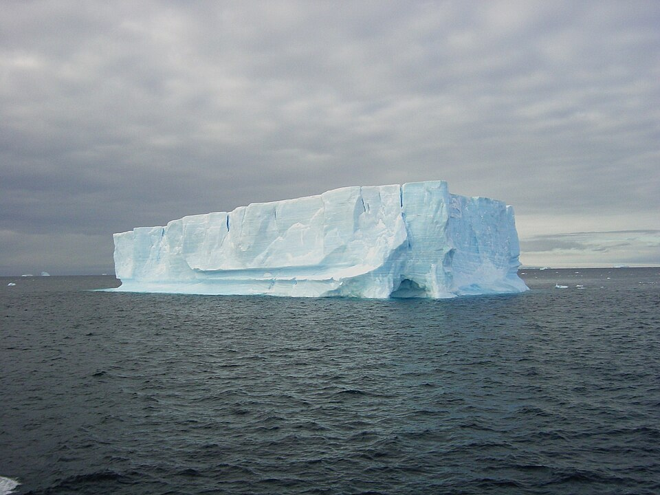

Por qué los barcos flotan, los globos suben y vos pesás menos en la pileta
Un ancla de hierro pesa menos debajo del agua que fuera de ella. Un submarino decide si sube o baja. Un globo de helio tira hacia arriba de su hilo. Las tres cosas son el mismo fenómeno: el empuje, la fuerza hacia arriba que ejerce un fluido sobre cualquier objeto que está dentro de él [1]. La regla que dice cuánto vale tiene más de dos mil años y lleva el nombre de Arquímedes.
El empuje no es una fuerza misteriosa: sale de la presión. La presión de un fluido aumenta con la profundidad, así que la parte de abajo de un objeto sumergido recibe más presión que la de arriba [1]. La presión empuja perpendicular a cada superficie: abajo, hacia arriba; arriba, hacia abajo; a los costados, hacia adentro, y esas fuerzas laterales se cancelan [1]. Lo que sobra es una fuerza neta hacia arriba.
Según OpenStax, el principio de Arquímedes dice que el empuje sobre un objeto es igual al peso del fluido que desplaza [1]:
Hay un argumento muy elegante para verlo. Si se saca el objeto, su lugar lo ocupa fluido, y ese fluido queda quieto: el resto del fluido lo sostiene. La fuerza que lo sostiene es la misma que antes actuaba sobre el objeto, así que el empuje tiene que ser igual al peso de ese fluido [1]. Si el empuje es mayor que el peso del objeto, el objeto sube; si es menor, se hunde [1]. Arquímedes (hacia 287–212 a. C.) enunció este principio mucho antes de que existiera el concepto de fuerza [1]. Según MacTutor, en su obra Sobre los cuerpos flotantes estableció los principios básicos de la hidrostática [2].
El lugar vacante: imaginá el hueco que deja tu cuerpo en la pileta. Si no estuvieras, ese hueco estaría lleno de agua, y el agua de alrededor la sostendría sin esfuerzo. Cuando entrás, el agua de alrededor sigue empujando igual, solo que ahora te empuja a vos. Por eso el empuje es exactamente el peso del agua que ocupaba tu lugar.
Un pedazo de arcilla se hunde en el agua. La misma arcilla, moldeada como un barquito, flota: por su forma desplaza más agua y recibe más empuje, aunque su masa sea la misma [1]. Lo mismo pasa con los barcos de acero [1]. Lo que decide si algo flota es su densidad media: si es menor que la del fluido, flota; si es mayor, se hunde [1]. Y la fracción que queda sumergida es justamente el cociente de las densidades [1]:
OpenStax lo ejemplifica con una mujer de 60 kg que flota en agua dulce con el 97 % del volumen sumergido, con los pulmones llenos de aire: su densidad media es de 970 kg/m³, menor que la del agua [1]. Los ejemplos de cosas menos densas que flotan en fluidos más densos son muchos: aceite sobre agua, un globo de aire caliente en la atmósfera, un corcho en el vino, un iceberg en el mar, la cera de una lámpara de lava [1]. Y uno menos obvio: las cordilleras, que «flotan» sobre la corteza y el manto, más densos, que tienen debajo [1].

Los submarinos aprovechan esto al revés: tienen tanques de lastre que les permiten ajustar su densidad para flotar o hundirse a voluntad [1]. Por qué un objeto que flota no se da vuelta es otra historia, la de la estabilidad de los cuerpos flotantes.
El empuje sirve para medir densidades. Se pesa un objeto en el aire y después sumergido en un líquido de densidad conocida. Sumergido parece pesar menos: es su peso aparente, y la pérdida es igual al peso del líquido desplazado [1]. Con las dos mediciones se calcula el volumen y, de ahí, la densidad del objeto, que en una moneda es un indicio de si es auténtica [1]. Al revés, si se conoce la densidad del objeto, se puede medir la del líquido [1].
La historia más famosa de la física antigua viene del arquitecto romano Vitruvio, en el siglo I a. C. Según él, el rey Hierón II de Siracusa sospechaba que el orfebre que le hizo una corona de oro había reemplazado parte del oro por plata, y le pidió a Arquímedes que lo averiguara [3]. Al meterse en la bañera y ver que el agua rebalsaba, Arquímedes encontró la solución: sumergir en un recipiente lleno hasta el borde un peso de oro puro igual al de la corona, y después la corona. La plata, más liviana, haría la corona más voluminosa y rebalsaría más agua [3]. OpenStax recuerda que el grito de «¡Eureka!» («¡Lo encontré!») se le atribuye a menudo, y que algunos dicen que todo empezó en una bañera [1].
Chris Rorres, que desde 1995 reúne en un sitio web materiales sobre Arquímedes, hace la cuenta y muestra que el método de Vitruvio es difícil de aplicar. Con una corona de 1000 gramos con 30 % de plata y un recipiente de 20 cm de boca, el nivel del agua subiría solo 0,41 mm más que con oro puro: demasiado poco para medirlo bien [3]. Propone en cambio un método que usa la palanca y el empuje: colgar la corona y un peso igual de oro de los extremos de una balanza y sumergir las dos. La corona, más voluminosa, recibe más empuje, y la balanza se desequilibra en unos 13 gramos, algo que las balanzas de la época podían detectar fácilmente [3].
El empuje del aire: el principio vale para cualquier fluido, también para el aire. Por eso un globo de helio tira hacia arriba de su hilo [1]: el helio es mucho menos denso que el aire que desplaza. Y es el principio de los globos aerostáticos y los dirigibles.
El principio de Arquímedes es una consecuencia directa de que la presión aumenta con la profundidad. Explica por qué flotan los barcos y los icebergs, cómo suben y bajan los submarinos y cómo se mide la densidad de una moneda o de un líquido. Y viene acompañado de una de las mejores historias de la ciencia, que quizás no ocurrió exactamente como la contó Vitruvio, pero que sigue sirviendo para pensar.
Pregunta para la comunidad: Un barco con carga flota más hundido que vacío. Si el mismo barco pasa del río al mar, donde el agua es más densa, ¿flota más alto o más bajo? ¿Y qué le pasa al empuje total?